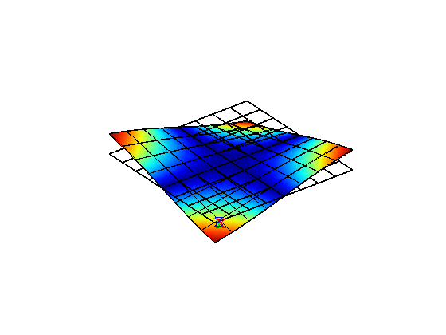
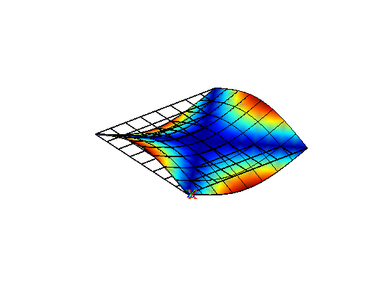
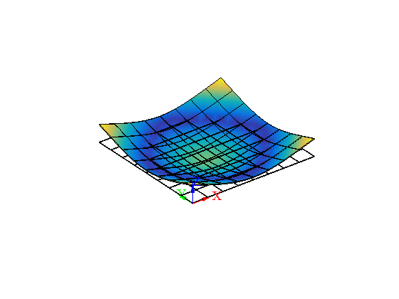
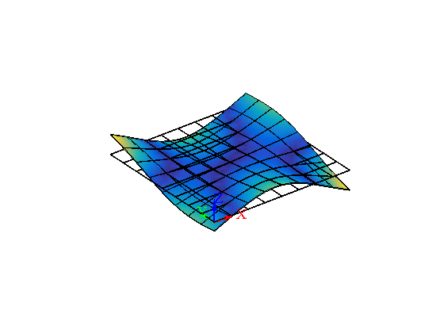
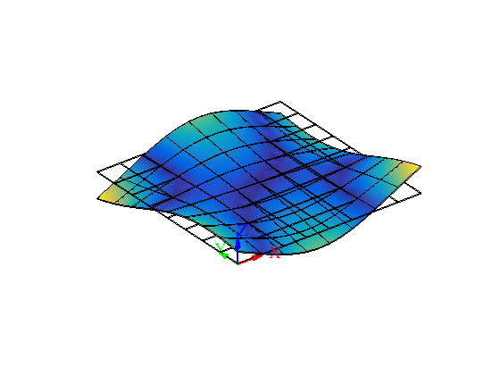
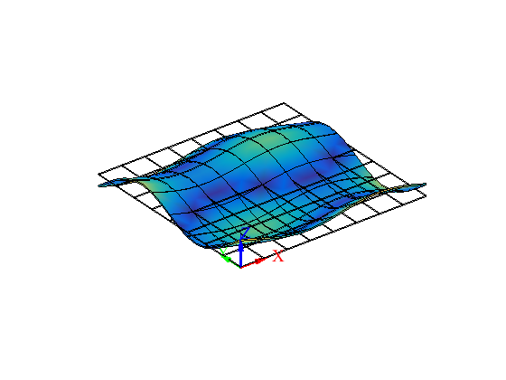
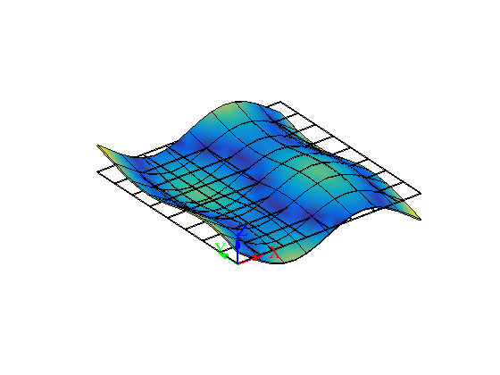
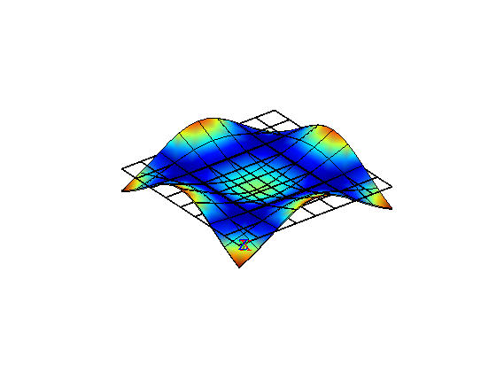

Vibration analysis of free thin square plate
Contents
Link to the m-file.
Description
Free-vibration problem is solved for a homogeneous free-floating (unsupported) square plate. This is the NAFEMS Benchmark, Test No. FV12.
The plate is discretized with solid elements. Because no displacements are prevented, the structure has six rigid body modes (six zero vibration frequencies).

|
| Figure 1. Definition of the geometry of the free square plate |
The nonzero benchmark frequencies are (in hertz): 1.622, 2.360, 2.922, 4.190, 4.190, 7.356, 7.356, 7.668.
Solution
function pub_FV52NAFEMS_vibration
Define the material properties.
pu=physical_units_struct;
% Parameters:
E = 200e3*pu.MEGA*pu.PA;
nu = 0.3;
rho= 8000*pu.KG/pu.M^3;
L =10*pu.M;% span of the plate t =0.05*pu.M;% thickness of the plate
The chosen mesh parameters. This is the coarse mesh as specified in the benchmark.
nL= 8;% number of elements span wise nt = 1;% number of elements through the thickness
The mesh is generated
[fens,fes] = H8_block(L,L,t,nL,nL,nt);;
The chosen elements are the quadratic Lagrange hexahedra.
[fens,fes] = H8_to_H27(fens,fes);
We are ready to bundle up the model data so they can be passed to the solver.
clear model_data model_data.fens =fens;% the finite element node set
Note that we are specifying the material parameters and the material orientation matrix. The integration rule is going to be used for both the stiffness matrix and the mass matrix.
clear region region.rho =rho; region.E=E; region.nu=nu; region.fes= fes;% set of finite elements for the interior of the domain region.integration_rule = gauss_rule (struct('dim', 3, 'order', 3)); model_data.region{1} =region;
How many natural frequencies should be calculated?
model_data.neigvs= 14;
Six rigid body modes are to be expected with the present free-floating structure. We have to use mass shifting. 1 Hz appears to be a good frequency between the first nonzero natural frequency and the rigid body mode frequency of zero.
model_data.omega_shift= 1*2*pi;
The modal analysis solver is now ready to be invoked.
model_data = deformation_linear_modal_analysis(model_data);
Warning: Some (3) negative angular frequencies detected
Due to the mass-shifting, the frequencies may come out with nonzero (but hopefully small) imaginary parts. Remove the imaginary parts as they have no meaning.
format short e model_data.Omega' model_data.Omega = real(model_data.Omega); model_data.W = real(model_data.W);
ans = Columns 1 through 6 1.2385e-03 2.2756e-03 2.4042e-03 2.4235e-03 2.5800e-03 2.7530e-03 Columns 7 through 12 1.0213e+01 1.4932e+01 1.8571e+01 2.6509e+01 2.6509e+01 4.7776e+01 Columns 13 through 14 4.7776e+01 4.8615e+01
Furthermore, let us get rid of the rigid body modes (first six).
model_data.Omega = model_data.Omega(7:end);
model_data.W = model_data.W(:,7:end);
The modal-plot algorithm can be called to produce the plot of the first eight frequency modes.
model_data.postprocessing.u_scale= 2;
for mode=1:8
model_data.postprocessing.modelist=mode;
model_data=deformation_plot_modes(model_data);
snapnow;% produce an image for the published output now
end
Mode 1, frequency 1.6254
Mode 2, frequency 2.3765
Mode 3, frequency 2.9556
Mode 4, frequency 4.219
Mode 5, frequency 4.219
Mode 6, frequency 7.6039
Mode 7, frequency 7.6039
Mode 8, frequency 7.7373
Discussion
The natural frequencies are extracted from the updated model_data data structure.
f=model_data.Omega'/2/pi;
disp(['Natural frequencies ' ': ' num2str(f,4) ' [Hz]' ]);
Natural frequencies : 1.625 2.377 2.956 4.219 4.219 7.604 7.604 7.737 [Hz]
These computed frequencies should be compared with the benchmark values of in [Hz].
fan=[1.622, 2.360, 2.922, 4.190, 4.190, 7.356, 7.356, 7.668];
In percent we have the comparison
format short
f(1:length(fan))./fan*100
ans = Columns 1 through 7 100.2079 100.6994 101.1514 100.6932 100.6932 103.3695 103.3695 Column 8 100.9044
The maximum error is around 3%. With a doubling of the number of element edges per dimension the error is brought under 1% in all eight natural frequencies. (Set nL=16, nt=2 above.)
end